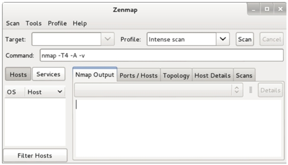
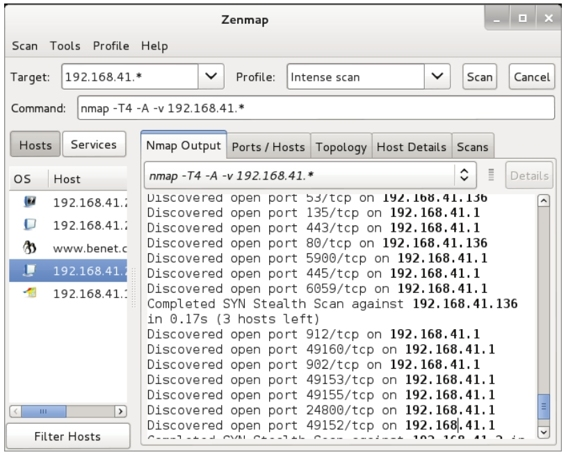

4.4 查看打开的端口
对一个大范围的网络或活跃的主机进行渗透测试，必须要了解这些主机上所打开的端口号。在Kali Linux中默认提供了Nmap和Zenmap两个扫描端口工具。为了访问目标系统中打开的TCP和UDP端口，本节将介绍Nmap和Zenmap工具的使用。
4.4.1 TCP端口扫描工具Nmap
使用Nmap工具查看目标主机192.168.41.136上开放的端口号。执行命令如下所示：
root@kali:~# nmap 192.168.41.136
Starting Nmap 6.40 ( http://nmap.org ) at 2014-04-19 16:21 CST
Nmap scan report for www.benet.com (192.168.41.136)
Host is up (0.00022s latency).
Not shown: 996 closed ports
PORT STATE SERVICE
21/tcp open ftp
22/tcp open ssh
23/tcp open telnet
25/tcp opne smtp
53/tcp open domain
80/tcp open http
111/tcp open rpcbind
139/tcp open netbios-ssn
445/tcp open microsoft-ds
512/tcp open exec
513/tcp open login
514/tcp open shell
1099/tcp open rmiregistry
1524/tcp open ingreslock
2049/tcp open nfs
2121/tcp open ccproxy-ftp
3306/tcp open mysql
5432/tcp open postgresql
5900/tcp open vnc
6000/tcp open X11
6667/tcp open irc
8009/tcp open ajp13
8180/tcp open unknown
MAC Address: 00:0C:29:31:02:17 (VMware)
Nmap done: 1 IP address (1 host up) scanned in 0.28 seconds
输出的信息显示了主机192.168.41.136上开放的所有端口，如22、53、80和111等。
1. 指定扫描端口范围
如果目标主机上打开的端口较多时，用户查看起来可能有点困难。这时候用户可以使用Nmap指定扫描的端口范围，如指定扫描端口号在1～1000之间的端口号，执行命令如下所示：
root@kali:~# nmap -p 1-1000 192.168.41.136
Starting Nmap 6.40 ( http://nmap.org ) at 2014-04-19 16:27 CST
Nmap scan report for www.benet.com (192.168.41.136)
Host is up (0.00020s latency).
Not shown: 49 closed ports
PORT STATE SERVICE
21/tcp open ftp
22/tcp open ssh
23/tcp open telnet
25/tcp opne smtp
53/tcp open domain
80/tcp open http
111/tcp open rpcbind
139/tcp open netbios-ssn
445/tcp open microsoft-ds
512/tcp open exec
513/tcp open login
514/tcp open shell
MAC Address: 00:0C:29:31:02:17 (VMware)
Nmap done: 1 IP address (1 host up) scanned in 0.35 seconds
输出的信息显示了主机192.168.41.136上端口在1～1000之间所开放的端口号。
2. 扫描特定端口
Nmap工具还可以指定一个特定端口号来扫描。
【实例4-2】使用Nmap工具指定扫描在192.168.41.*网段内所有开启TCP端口22的主机。执行命令如下所示：
root@kali:~# nmap -p 22 192.168.41.*
Starting Nmap 6.40 ( http://nmap.org ) at 2014-04-21 09:44 CST
Nmap scan report for 192.168.41.1
Host is up (0.00029s latency).
PORT STATE SERVICE
22/tcp closed ssh
MAC Address: 00:50:56:C0:00:08 (VMware)
Nmap scan report for 192.168.41.2
Host is up (0.00032s latency).
PORT STATE SERVICE
22/tcp closed ssh
MAC Address: 00:50:56:E9:AF:47 (VMware)
Nmap scan report for www.benet.com (192.168.41.136)
Host is up (0.00056s latency).
PORT STATE SERVICE
22/tcp open ssh
MAC Address: 00:0C:29:31:02:17 (VMware)
Nmap scan report for 192.168.41.254
Host is up (0.00027s latency).
PORT STATE SERVICE
22/tcp filtered ssh
MAC Address: 00:50:56:E1:5E:75 (VMware)
Nmap scan report for 192.168.41.234
Host is up (0.000052s latency).
PORT STATE SERVICE
22/tcp open ssh
Nmap done: 256 IP addresses (5 hosts up) scanned in 2.81 seconds
输出的结果显示了192.168.41.*网段内所有开启22端口的主机信息。从输出的信息中可以看到，总共有五台主机上打开了22号端口。
使用Nmap工具还可以指定扫描端口22结果的输出格式。执行命令如下所示：
root@kali:~# nmap -p 22 192.168.41.* -oG /tmp/nmap-targethost-tcp445.txt
执行以上命令后输出的信息与第三步中输出的结果类似，这里就不再列举。但是执行该命令后，Nmap会将输出的信息保存到/tmp/ nmap-targethost-tcp445.txt文件中。
4.4.2 图形化TCP端口扫描工具Zenmap
Zenmap是Nmap官方推出的一款基于Nmap的安全扫描图形用户界面。它的设计目标是快速地扫描大型网络，当然也可以使用它扫描单个主机。下面将介绍Zenmap工具的使用。
启动Zenmap工具。在Kali图形界面依次选择“应用程序”|Kali Linux|“信息收集”|“DNS分析”|Zenmap命令，将打开如图4.2所示的界面。

图4.2 Zenmap起始界面
在该界面Target文本框中输入目标主机地址，在Profile文本框中选择扫描类型。设置完后，单击Scan按钮，扫描结果如图4.3所示。

图4.3 扫描界面
该界面显示了扫描192.168.41.*网段内所有主机启动的所有端口信息。在左侧栏中可以切换以主机或服务的形式分别显示详细扫描结果。在右侧栏中，可以分别查看Namp输出信息、端口/主机、拓扑结构、主机详细信息和扫描信息等。